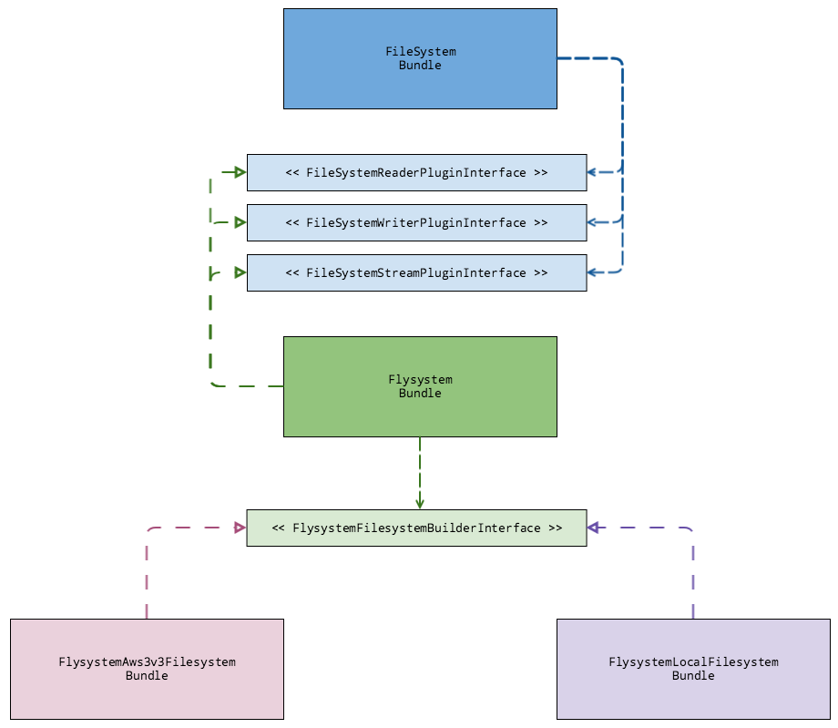

File System
The FileSystem Service provides an abstraction for file systems. It uses the same interface to access different types of file systems, regardless of their location or protocol.
The Flysystem module provides plugins which thephpleague/flysystem vendor package and implement FileSystem's plugin interfaces. For more details, see Flysystem.
FileSystem module
The FileSystem module uses the FileSystemReaderPluginInterface to execute read operations, the FileSystemWriterPluginInterface to execute write operations and the FileSystemStreamPluginInterface to handle big read or write operations.

FileSystem Plugin Interfaces
| Plugin Interface | Description |
|---|---|
| FileSystemReaderPluginInterface | Reading operations |
| FileSystemWriterPluginInterface | Writing operations |
| FileSystemWriterPluginInterface | Stream handling operations |
Plugin Configuration
The FileSystem plugins are loaded via FileSystemDependencyProvider by the methods: addFileSystemReaderPlugin(), addFileSystemWriterPlugin() and addFileSystemStreamPlugin().
<?php
namespace Spryker\Service\FileSystem;
use Spryker\Service\Flysystem\Plugin\FileSystem\FileSystemReaderPlugin;
use Spryker\Service\Flysystem\Plugin\FileSystem\FileSystemStreamPlugin;
use Spryker\Service\Flysystem\Plugin\FileSystem\FileSystemWriterPlugin;
use Spryker\Service\Kernel\AbstractBundleDependencyProvider;
use Spryker\Service\Kernel\Container;
class FileSystemDependencyProvider extends AbstractBundleDependencyProvider
{
/**
* @param \Spryker\Service\Kernel\Container $container
*
* @return \Spryker\Service\Kernel\Container
*/
protected function addFileSystemReaderPlugin(Container $container)
{
$container[static::PLUGIN_READER] = function (Container $container) {
return new FileSystemReaderPlugin();
};
return $container;
}
/**
* @param \Spryker\Service\Kernel\Container $container
*
* @return \Spryker\Service\Kernel\Container
*/
protected function addFileSystemWriterPlugin(Container $container)
{
$container[static::PLUGIN_WRITER] = function (Container $container) {
return new FileSystemWriterPlugin();
};
return $container;
}
/**
* @param \Spryker\Service\Kernel\Container $container
*
* @return \Spryker\Service\Kernel\Container
*/
protected function addFileSystemStreamPlugin(Container $container)
{
$container[static::PLUGIN_STREAM] = function (Container $container) {
return new FileSystemStreamPlugin();
};
return $container;
}Service Configuration
You can use multiple FileSystems at once. They are identified by name, and contain all the configurations required by the specific FileSystem adapter and type defined under sprykerAdapterClass.
The sprykerAdapterClass should point to the builder plugin used to create the FileSystem.
Separate FileSystems for media and documents
It is entirely possible to create separate file systems for media content and documents.
For example, you can define two FileSystems. One called "media", that only contains media specific content like: images, video and audio and another called "customer" that contains customer-sensitive information that should not be stored in the cloud.
We use local file systems for development purposes, but config for staging or production environments. Therefore, you could for example provide, an AWS3 adapter without having to change any code. More precisely, with only configuration you can read/write files from AWS3 no need to change any code mirroring your development environment's logic for writing to the local file system.
Development environment example:
<?php
use Spryker\Shared\FileSystem\FileSystemConstants;
use Spryker\Service\FlysystemLocalFileSystem\Plugin\Flysystem\LocalFilesystemBuilderPlugin;
$config[FileSystemConstants::FILESYSTEM_SERVICE] = [
'media' => [
'sprykerAdapterClass' => LocalFilesystemBuilderPlugin::class,
'root' => APPLICATION_ROOT_DIR . '/data/DE/media/',
'path' => 'images/categories/',
],
'customer' => [
'sprykerAdapterClass' => LocalFilesystemBuilderPlugin::class,
'root' => APPLICATION_ROOT_DIR . '/data/DE/customer_storage/',
'path' => 'documents/',
],
];Staging/Production environment example:
<?php
use Spryker\Shared\FileSystem\FileSystemConstants;
use Spryker\Service\FlysystemAws3v3FileSystem\Plugin\Flysystem\Aws3v3FilesystemBuilderPlugin;
use Spryker\Service\FlysystemFtpFileSystem\Plugin\Flysystem\FtpFilesystemBuilderPlugin;
$config[FileSystemConstants::FILESYSTEM_SERVICE] = [
'media' => [
'sprykerAdapterClass' => Aws3v3FilesystemBuilderPlugin::class,
'root' => '/DE/',
'path' => 'media/',
'key' => '..',
'secret' => '..',
'bucket' => '..',
'version' => '..',
'region' => '..',
],
'customer' => [
'sprykerAdapterClass' => FtpFilesystemBuilderPlugin::class,
'host' => '..',
'username' => '..',
'password' => '..',
],
];FileSystem Usage
Now that we have defined some FileSystems, we can start using them. For example, getting metedata information of a media file stored under "foo/bar.jpg".
<?php
use Generated\Shared\Transfer\FileSystemQueryTransfer;
$fileSystemQueryTransfer = new FileSystemQueryTransfer();
$fileSystemQueryTransfer->setFileSystemName('media');
$fileSystemQueryTransfer->setPath('/foo/bar.jpg');
$metadataTransfer = $fileSystemService->getMetadata($fileSystemQueryTransfer);To get metadata:
Define the FileSystem name provided in the configuration and set the path to the filename you want to extract metadata from.
The read methods use mostly FileSystemQueryTransfer, the write methods use mostly FileSystemContentTransfer and stream methods use FileSystemStreamTransfer.